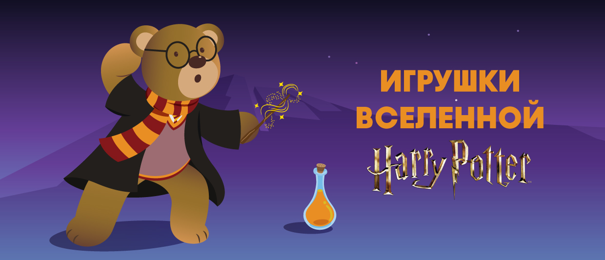

Федеральная розничная сеть магазинов детских игрушек, которая насчитывает 82 магазина по России — от Санкт-Петербурга до Владивостока.
В этом году TOY.RU в третий раз подряд получает премию Retailer of the Year Russia. Компания стала победителем в главных номинациях: «Лучший сетевой магазин России» и «Лучший интернет-магазин России», а также «Лучший сетевой магазин года 2020-2021» и «Лучший онлайн-магазин года 2020-2021» в категории «Дети».
Магазин, в ассортимент которого входят такие бренды, как: L.O.L. Surprise, LEGO, Bey Blade, NERF, Barbie, Enchantimals, Hot Wheels, Hatchimals, Zapf Creation, Poopsie Surprise Unicorn, Smart Egg, Paw Patrol и другие.
У нас представлен большой и разнообразный ассортимент игрушек по очень выгодным ценам. Знаменитые на весь мир конструкторы LEGO , невероятно популярные очаровательные куколки L.O.L. Surprise, спрятанные в многослойный шарик-сюрприз, игрушки, созданные по сюжетам любимых мультфильмов: «Черепашки Ниндзя», «Рев и заводная команда», «Щенячий патруль», «Тобот». Куклы «Принцессы Диснея», «Сказочный патруль»; интерактивные куклы Беби Борн. Мягкие игрушки Aurora, Disney, модели машинок Welly, самые разнообразные наборы для творчества , PLAY-DOH, бластеры Nerf, электромобили Peg-Perego, игрушки и наборы для малышей Fisher-Price и Mega Bloks , товары для игры на свежем воздухе от Little Tikes и даже множество самых разнообразных аксессуаров для праздника , которые помогут Вам устроить настоящую вечеринку для юных любителей приключений.
